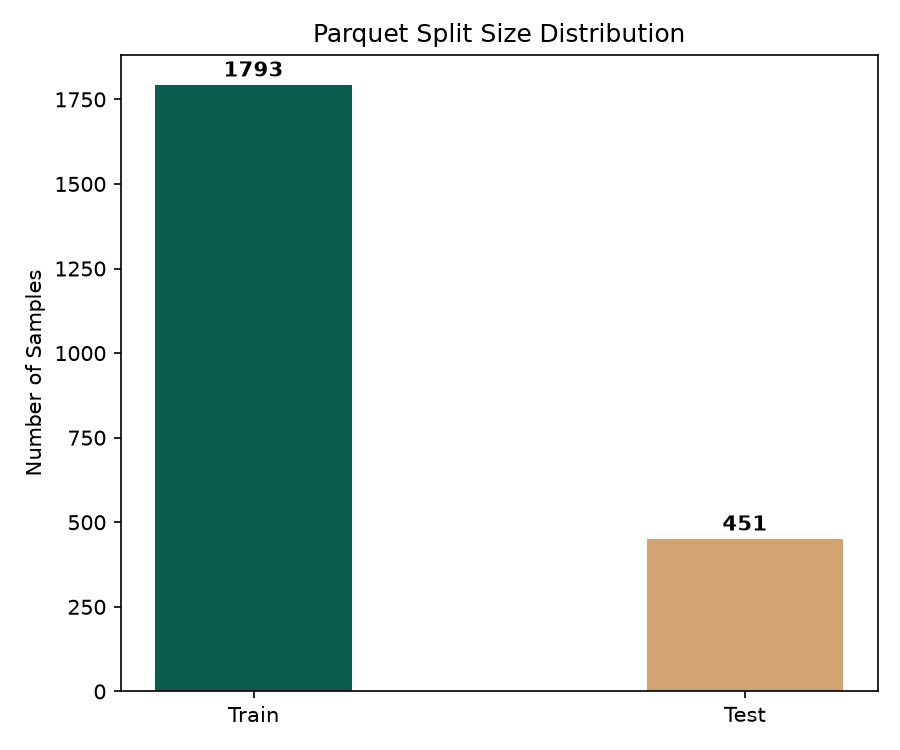
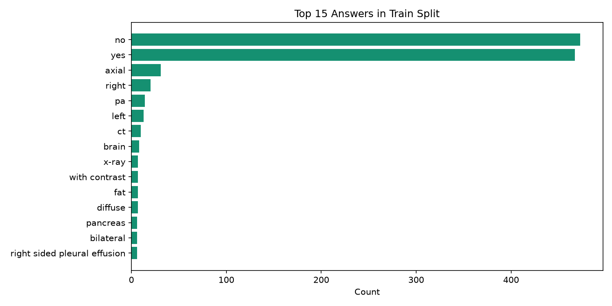
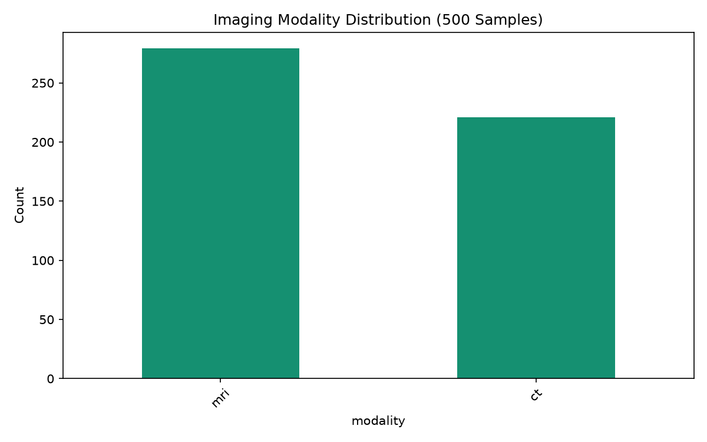
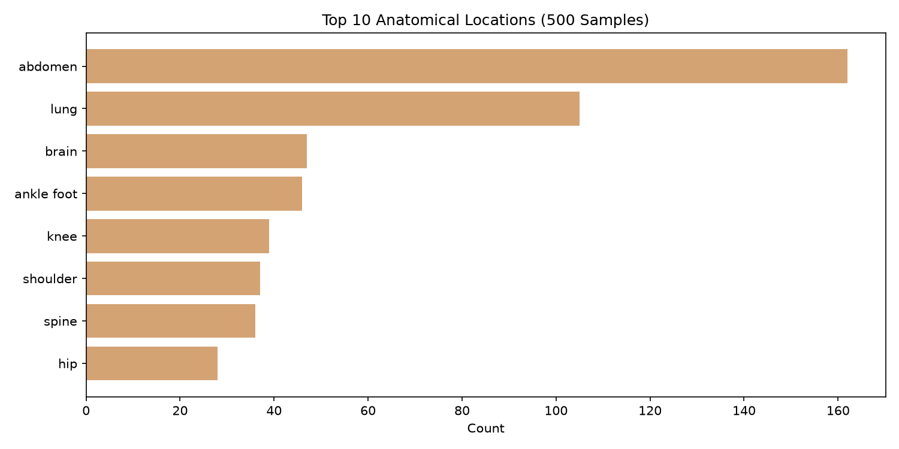

🔍 So sánh: repo tham chiếu Medical-VQA vs dự án của mình
CNN_LSTM_references/Medical-VQA/ (README + Open_Ended_VQA.ipynb + data/*.csv). Trả lời: nó làm gì · tổ chức data ra sao · có khắc phục leakage không.⚡ TL;DR
- Tổ chức data gọn hơn thật: dùng file CSV có metadata (
img_id, category, answer_type, mode) + split cố định train/valid/test → tái lập tốt, phân tích theo category/loại câu hỏi dễ. - NHƯNG không khắc phục leakage. Mình đã đo: 145/146 ảnh trong test cũng có trong train (~99% trùng). Đây là leak "kinh điển" của split chuẩn VQA-RAD — repo này kế thừa y nguyên.
- Về model: nó là bản generative (PubMedCLIP + GPT-2, prefix tuning) — chính là notebook mà
Open_Ended_VQA_fixed.ipynbcủa mình đã sửa 4 nhóm bug. Cùng hướng generative đã chốt.
1. Repo tham chiếu đã LÀM GÌ
| Hạng mục | Chi tiết (từ README + notebook) |
|---|---|
| Bài toán | Generation (sinh answer), theo phương pháp MedVInT-TD của PMC-VQA |
| Visual encoder | PubMedCLIP ViT-B/32 — ảnh → vector 512-d |
| LM decoder | DistilGPT2-PubMed (đã adapt domain y khoa) |
| Fusion / mapper | MLP mapper 512→768→768 → chèn "visual prefix" vào chuỗi embedding GPT-2 |
| Train | Language-modeling, CE loss trên answer tokens, Adam, batch 16, 10 epoch, lr 5e-3 |
| Cải tiến | Prefix tuning (prompt: question: … context: v₁…vₓ answer:), beam search khi eval |
| Kết quả | Yes/No accuracy ≈ 0.45; open-ended kém, "không có answer space cố định → cần dataset lớn hơn". LoRA thử nhưng loss bất ổn → bỏ. |
| Metric | BLEU-1, token-F1, accuracy (yes/no) |
Open_Ended_VQA.ipynb ở repo này là bản GỐC còn bug. Bản notebook/Open_Ended_VQA_fixed.ipynb trong dự án của mình đã sửa: generate() chèn nhầm chiều batch, val loss NameError, BLEU tính trên ký tự, lr 5e-3 gây catastrophic forgetting.2. Tổ chức DATA (điểm nó làm tốt hơn)
Thay vì nạp thẳng từ HuggingFace (ảnh nhúng trong dataset như dự án của mình), repo này lưu thành CSV + thư mục ảnh riêng:
data/ ├── img/ ← ảnh, tham chiếu bằng img_id ├── vqa_rad.csv ← full (2248 dòng) ├── vqa_rad_train.csv ← 1797 dòng cột: img_id, category, question, answer_type, answer, mode ├── vqa_rad_valid.csv ← 226 ├── vqa_rad_test.csv ← 225 ├── vqa_rad_only4maincat.csv ← 441 (lọc 4 category chính) ├── vqa_rad_train_4maincatAndOther.csv← 1797 └── vqa_rad_test_4maincatAndOther.csv ← 451 (khớp test official HF)
category (PRES/POS/MODALITY/ABN/SIZE/PLANE/ATTRIB/OTHER), answer_type (CLOSED/OPEN), mode (loại ảnh) → phân tích theo nhóm dễ, split cố định & tái lập, không phụ thuộc thứ tự HF.Phân bố (đo từ vqa_rad_train.csv)
| answer_type | count | · | Top category | count |
|---|---|---|---|---|
| CLOSED (yes/no…) | ~1009 | PRES (presence) | 637 | |
| OPEN | ~760 | POS (position) | 258 | |
| MODALITY / ABN / SIZE / PLANE / ATTRIB | 152/146/126/94/70 |
3. ❓ Có khắc phục LEAKAGE không — KHÔNG
Mình cắt cột img_id của từng split rồi đếm ảnh trùng. Kết quả:
| Split | Ảnh unique train | Ảnh unique test | Ảnh test cũng có trong train | % trùng |
|---|---|---|---|---|
| train / test (2248) | 313 | 146 | 145 | 99.3% |
| 4maincatAndOther (test=451) | 313 | 203 | 202 | 99.5% |
| train / valid | 313 | 142 | 141 | 99.3% |
02.Continue_leak.md lo ngại — và repo tham chiếu không giải quyết, nó dùng đúng split chuẩn của VQA-RAD vốn có sẵn leak này.
❓ Bản chất của Image Leakage & Cách xây dựng dữ liệu VQA
1. Tại sao số lượng ảnh độc nhất lại nhỏ hơn số câu hỏi (số dòng)?
Trong Visual Question Answering, một bức ảnh chụp y khoa (X-quang, CT, MRI) thường được sử dụng để hỏi nhiều câu hỏi khác nhau. Ví dụ: từ 1 bức ảnh chụp phổi duy nhất, bác sĩ có thể tạo ra 3 dòng dữ liệu: dòng 1 hỏi về tràn dịch màng phổi, dòng 2 hỏi về xương sườn, dòng 3 hỏi về bóng tim. Do đó, số lượng cặp câu hỏi-đáp (dòng dữ liệu) luôn lớn hơn số lượng ảnh gốc.
2. Image Leakage (Rò rỉ hình ảnh) thực chất là gì?
Rò rỉ ở đây chỉ xảy ra ở khía cạnh hình ảnh (visual data), còn các câu hỏi và câu trả lời ở tập Train và tập Test là hoàn toàn khác nhau.
Mặc dù câu hỏi khác nhau, nhưng do mô hình đã được nhìn thấy bức ảnh này lúc huấn luyện (để trả lời câu hỏi khác), đặc trưng thị giác của bức ảnh đã được mô hình "học thuộc lòng" (visual memorization). Khi gặp lại ảnh cũ ở tập Test, mô hình chỉ cần nhận diện ảnh cũ để trả lời chứ không thực sự học cách phân tích một ca bệnh mới. Điều này làm điểm số đánh giá bị ảo (overestimated) và mô hình dễ thất bại khi gặp ảnh của bệnh nhân mới hoàn toàn ngoài thực tế.
Vì sao vẫn là split "chuẩn" trong nghiên cứu?
VQA-RAD chỉ có 313 ảnh nhưng có tới ~2248 cặp Q-A. Việc chia ngẫu nhiên theo cặp Q-A (split chuẩn của VQA-RAD và test official 451 trên HF) dẫn đến việc ảnh bị lặp ở cả hai phía. Hầu hết các công trình nghiên cứu lớn trên thế giới (kể cả các tài liệu đối chứng của Gemma) đều báo cáo trên split này để đảm bảo:
- Ưu điểm: So sánh trực tiếp, công bằng được với điểm số của các công trình khác (literature benchmark).
- Nhược điểm: Điểm số phản ánh một phần khả năng ghi nhớ ảnh cũ. Cách khắc phục khoa học là đo đạc, khai báo nó như một Limitation (Giới hạn nghiên cứu) trong báo cáo, kết hợp chạy song song tập test sạch để đối chứng thực tế.
📊 3b. Chi tiết Đánh giá & Phân tích Dữ liệu (Audit Reports)
Dưới đây là thống kê chi tiết từ các file Parquet dữ liệu thực tế được sử dụng trong dự án.
📌 A. Tập dữ liệu VQA-RAD (Gemma 2B/4B Training & Evaluation)
Được đo trực tiếp từ file Parquet di chuyển bởi người dùng (data_audit_report/data/train...parquet và test...parquet):
- Tập Train: 1,793 mẫu, 313 ảnh độc nhất.
- Tập Test: 451 mẫu, 203 ảnh độc nhất.
- Tỷ lệ trùng lặp: 202 trong số 203 ảnh ở tập Test đã có mặt trong Train (rò rỉ 99.51%).

So sánh kích thước các split VQA-RAD

Tỷ lệ trùng lặp ảnh (99.51%)

Phân bố Closed vs Open-ended (VQA-RAD)

Top 15 đáp án y khoa phổ biến (Long-tail)
📌 B. Tập dữ liệu RadImageNet-VQA (Benchmark 500 mẫu - Open/Closed)
Được đo từ 500 mẫu trích xuất cân bằng dùng trong notebook benchmark_4.ipynb:
- Cấu trúc: 250 mẫu
openvà 250 mẫuclosed(loại bỏ trắc nghiệm, seed 42). - Số ảnh độc nhất: 403 ảnh.
- Đối chiếu với tập Train của chính RadImageNet-VQA (instruct train): 0% trùng lặp (đối chiếu với 15,000 dòng train instruct, phát hiện 0 mẫu trùng).
- Đối chiếu với tập Train của VQA-RAD (file Parquet gồm 1,793 dòng): 0% trùng lặp (so sánh trực tiếp mã băm MD5 của 403 ảnh test RadImageNet với 313 ảnh train VQA-RAD, phát hiện 0 mẫu trùng). Điều này khẳng định hai bộ dữ liệu hoàn toàn độc lập và không có hiện tượng rò rỉ chéo.

Phân bố câu hỏi (250 Open / 250 Closed)

Phân bố thiết bị chụp y khoa (CT, MRI, US...)

Top 10 vị trí giải phẫu trong 500 mẫu test
4. Bảng so sánh tổng thể
| Tiêu chí | Repo tham chiếu (Medical-VQA) | Dự án của mình (hướng mới) |
|---|---|---|
| Bài toán | Generative (MedVInT-TD) | Generative (GRU decoder) — cùng hướng |
| Visual encoder | PubMedCLIP ViT (pretrained, ~lớn) | CustomCNN / ResNet-18 frozen (nhẹ) |
| Text/Decoder | DistilGPT2-PubMed (LM decoder) | BiLSTM/Transformer encoder + GRU decoder |
| Tổ chức data | CSV + img folder + metadata + split cố định | nạp từ HF, split bằng group_split (chưa có metadata) → nên học theo |
| Metadata sẵn | category, answer_type, mode | chỉ image/question/answer → thiếu |
| Test split độc lập | có file test cố định (nhưng leak ảnh) | dùng test official HF (cũng leak ảnh) |
| Kiểm soát leakage | Không (99% trùng ảnh) | Cũng chưa — phải đo & khai báo |
| Baseline theo modality (question-only…) | Không | Có (G0/G1/G2/G3) |
| Grad-CAM / error taxonomy | Không | Có trong đề cương |
5. Nên áp dụng gì cho dự án
- Học cách tổ chức data của họ: chuyển sang dùng CSV có
img_id, category, answer_type, mode+ split cố định (thậm chí dùng luôn CSV của họ để split khớp literature). → có sẵn stratified analysis theo category. - Về leakage: KHÔNG cố "sửa" split chuẩn (sẽ mất khả năng so với Gemma). Thay vào đó: đo & báo cáo % ảnh test trùng train (99%) như một limitation, và (tùy chọn) thêm một split phụ image-disjoint làm robustness check.
- Giữ ưu thế của mình: baseline G0/G1 (question-only, image-only), Grad-CAM, error taxonomy — những thứ repo tham chiếu không có.
- Model: hướng generative đã đúng; PubMedCLIP+GPT-2 của họ là baseline generation mạnh để đối chiếu (bản
Open_Ended_VQA_fixed.ipynb).